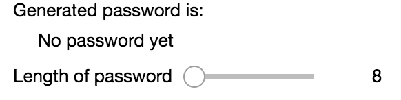

OPTIONAL Password generator: observe#
Consider a super-simple (and super-bad) password generator widget: given a password length, represented by a slider in the interface, it constructs a sequence of random letters of that length and displays it.
This notebook illustrates how to connect the function that calculates the password to the length slider using observe but mixes together the code to calculate the password and the code to handle the events generated by the interface
import ipywidgets as widgets
Construct the interface (widget)#
The widget should look like this once constructed:

Compose the widget out of three basic widgets, one each for the title, the (currently not set) password, and one for the slider.
In the cell below construct each of the basic widgets.
helpful_title = 0 # Replace with something that displays "Generated password is:"
password_text = 0 # Replace with something that displays "No password set"
password_length = 0 # Replace with slider
Combine these three into a single widget…the output should look like the image above.
password_widget = widgets.VBox(children=[helpful_title, password_text, password_length])
password_widget
---------------------------------------------------------------------------
TraitError Traceback (most recent call last)
Cell In[3], line 1
----> 1 password_widget = widgets.VBox(children=[helpful_title, password_text, password_length])
2 password_widget
File D:\Anaconda3\Lib\site-packages\ipywidgets\widgets\widget_box.py:64, in Box.__init__(self, children, **kwargs)
62 def __init__(self, children=(), **kwargs):
63 kwargs['children'] = children
---> 64 super(Box, self).__init__(**kwargs)
65 self.on_displayed(Box._fire_children_displayed)
File D:\Anaconda3\Lib\site-packages\ipywidgets\widgets\widget.py:478, in Widget.__init__(self, **kwargs)
476 """Public constructor"""
477 self._model_id = kwargs.pop('model_id', None)
--> 478 super(Widget, self).__init__(**kwargs)
480 Widget._call_widget_constructed(self)
481 self.open()
File D:\Anaconda3\Lib\site-packages\traitlets\traitlets.py:1355, in HasTraits.__init__(self, *args, **kwargs)
1353 for key, value in kwargs.items():
1354 if self.has_trait(key):
-> 1355 setattr(self, key, value)
1356 changes[key] = Bunch(
1357 name=key,
1358 old=None,
(...)
1361 type="change",
1362 )
1363 else:
1364 # passthrough args that don't set traits to super
File D:\Anaconda3\Lib\site-packages\traitlets\traitlets.py:716, in TraitType.__set__(self, obj, value)
714 if self.read_only:
715 raise TraitError('The "%s" trait is read-only.' % self.name)
--> 716 self.set(obj, value)
File D:\Anaconda3\Lib\site-packages\traitlets\traitlets.py:690, in TraitType.set(self, obj, value)
689 def set(self, obj: HasTraits, value: S) -> None:
--> 690 new_value = self._validate(obj, value)
691 assert self.name is not None
692 try:
File D:\Anaconda3\Lib\site-packages\traitlets\traitlets.py:722, in TraitType._validate(self, obj, value)
720 return value
721 if hasattr(self, "validate"):
--> 722 value = self.validate(obj, value)
723 if obj._cross_validation_lock is False:
724 value = self._cross_validate(obj, value)
File D:\Anaconda3\Lib\site-packages\traitlets\traitlets.py:3482, in Container.validate(self, obj, value)
3479 if value is None:
3480 return value
-> 3482 value = self.validate_elements(obj, value)
3484 return t.cast(T, value)
File D:\Anaconda3\Lib\site-packages\traitlets\traitlets.py:3494, in Container.validate_elements(self, obj, value)
3492 v = self._trait._validate(obj, v)
3493 except TraitError as error:
-> 3494 self.error(obj, v, error)
3495 else:
3496 validated.append(v)
File D:\Anaconda3\Lib\site-packages\traitlets\traitlets.py:810, in TraitType.error(self, obj, value, error, info)
801 else:
802 error.args = (
803 "The '{}' trait contains {} which " "expected {}, not {}.".format(
804 self.name,
(...)
808 ),
809 )
--> 810 raise error
812 # this trait caused an error
813 if self.name is None:
814 # this is not the root trait
File D:\Anaconda3\Lib\site-packages\traitlets\traitlets.py:3492, in Container.validate_elements(self, obj, value)
3490 for v in value:
3491 try:
-> 3492 v = self._trait._validate(obj, v)
3493 except TraitError as error:
3494 self.error(obj, v, error)
File D:\Anaconda3\Lib\site-packages\traitlets\traitlets.py:722, in TraitType._validate(self, obj, value)
720 return value
721 if hasattr(self, "validate"):
--> 722 value = self.validate(obj, value)
723 if obj._cross_validation_lock is False:
724 value = self._cross_validate(obj, value)
File D:\Anaconda3\Lib\site-packages\traitlets\traitlets.py:2311, in Instance.validate(self, obj, value)
2309 return t.cast(T, value)
2310 else:
-> 2311 self.error(obj, value)
File D:\Anaconda3\Lib\site-packages\traitlets\traitlets.py:815, in TraitType.error(self, obj, value, error, info)
812 # this trait caused an error
813 if self.name is None:
814 # this is not the root trait
--> 815 raise TraitError(value, info or self.info(), self)
817 # this is the root trait
818 if obj is not None:
TraitError: The 'children' trait of a VBox instance contains an Instance of a TypedTuple which expected a Widget, not the int 0.
# %load solutions/bad-pass-pass1-widgets.py
Calculate the password…#
The function below calculates the password and should set the value of the password_text widget. The first part has been done, you just need to add the line that sets the widget value.
def calculate_password(change):
import string
from secrets import choice
length = change.new
# Generate a list of random letters of the correct length.
password = ''.join(choice(string.ascii_letters) for _ in range(length))
# Add a line below to set the value of the widget password_text
# %load solutions/bad-pass-pass1-passgen.py
…and link password to widgets#
Fill in the line below. You want calculate_password to be called when the value of password_length changes. Here is a link to Widget Events in case you need it.
# call calculate_password whenever the password length changes
# %load solutions/bad-pass-pass1-observe.py
Now that the connection is made, try moving the slider and you should see the password update.